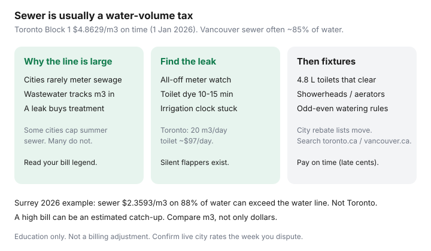

Utilities · Canada
How to lower municipal water and sewer bills in Canada
Households obsess over hydro and ignore the water-and-sewer line that quietly tracks every leaking toilet. In most Canadian cities, wastewater is billed as a function of metered water. A running flapper does not just waste litres — it buys sewage treatment you never used.
This is municipal bill structure plus a leak-and-fixture playbook. The meter test has its own page: how to run a leak test. Toronto line items sit in Toronto water bills explained.
Disclosure: There is no natural affiliate product in a municipal water-and-sewer sequence. Saving Optimizer does not claim plumber, fixture-brand, or city partnerships. This is education — not a billing adjustment or a plumbing inspection.
Key takeaways
- Sewer / wastewater charges usually track metered water volume (sometimes a percentage of it). Outdoor watering still often buys sewer you did not send to the plant — unless your city has a summer sewer cap or a second meter.
- Toronto Block 1 combined water + wastewater (1 Jan 2026, paid on time): $4.8629/m³ ($5.1188 after the due date). A 3.75% interim increase. Households almost never see Block 2 (industrial).
- Toronto Water: a leaking toilet can waste 20 m³/day — about $97/day at the 2026 on-time Block 1 rate (city illustration). Dye-test before you argue with the bill.
- Vancouver (2025 published metered units, used 20 Sep 2026; verify 2026): water $3.936–$4.934 per unit (one unit = 2.8317 m³) plus a year-round sewer unit charge, typically on 85% of metered water, plus a meter service charge.
- City rebate and exchange programs (toilets, rain barrels, washer) move. Search the city utility page, not a 2019 blog.
Why sewer charges often track water volume
Cities rarely meter the sewer leaving your house. They assume a large share of what came in through the water meter went out as wastewater. Toronto folds water and wastewater into one Block 1 ¢/m³. Vancouver bills a sewer rate per unit on about 85% of water (Surrey publishes 88% and separate 2026 ¢/m³). Some municipalities cap sewer in summer so lawn watering is not charged as sewage; many do not.
Stormwater, where it exists as its own line, is often a fixed or area-based charge (roof and driveway), not a litre charge. Read the legend on your bill. A condo may bury water in the maintenance fee — you still pay it.

Finding leaks: meter watch tests and toilet dye checks
Two home tests catch most “mystery” bills:
- All-off meter test — shut every tap and appliance, watch the leak indicator or the digits. Movement with nothing on is a leak or a running toilet. Procedure: the leak-test guide.
- Toilet dye test — food colouring or a dye tablet in the tank, do not flush, wait 10–15 minutes. Colour in the bowl is a flapper or fill-valve leak. Toronto Water’s own leak page uses this test.
Silent toilet leaks do not leave a puddle. They leave a $400 bill. A running hose bib, an irrigation clock stuck on, and a water softener that never rests are the other usual suspects.
Fixture upgrades: toilets, showerheads, aerators with Canadian codes
Federal and provincial water-efficiency rules pushed new toilets toward 4.8 L or dual-flush 6/3 L classes; older 13 L and 20 L tanks are still in many houses. A WaterSense / WaterSense-equivalent 4.8 L toilet that actually clears the bowl beats a cheap 3 L that everyone double-flushes. Showerheads in the 7.6 L/min class and 1.0–1.5 L/min aerators are the cheap stack. Confirm CSA markings and municipal bylaws (some cities restrict showerhead flow; some rebate only listed models).
A new toilet does not erase a sewer charge if the flapper still leaks. Fix the leak first, then shop the rebate list.
Outdoor watering and summer spike control
- Municipal watering restrictions (odd/even days, morning-only) are a fine risk and a bill lever. Follow the current bylaw, not last year’s Facebook post.
- A hose-end nozzle that shuts off, a rain barrel where the city still pays a rebate, and mulch beat a “smart” irrigation controller you never set.
- If your city offers a sewer-volume cap or a deduct meter for irrigation, ask before you water the lawn all July at indoor sewer ¢.
- Pools: filling is a one-time spike. Cover and leak-check beat refilling.
When a high bill is a meter or billing error
Compare m³ to the same period last year and to the previous cycle. A doubled winter bill with a frozen-then-burst hose, or a guest month, is usage. A 10× spike with a still meter after an all-off test is a call to the city: ask for a re-read, a photo of the dial, and whether the account is estimated. Estimated reads that get “caught up” look like a leak. Document everything before you dispute — the leak-test guide has a paper trail.
Toronto’s adjustment bar is high (roughly 3× historical daily average, plus other tests). Do not assume a repaired toilet entitles you to a credit. Other cities are more generous; some are not.
City-specific rebate programs (Toronto, Vancouver, and others) to check
| City / utility | What to search | Notes |
|---|---|---|
| Toronto | toronto.ca water rates; high bill & leaks; toilet / fixture incentives; low-income water rebate | Block 1 $4.8629/m³ on time (1 Jan 2026). Low-income senior / disability rebate $1.4589/m³ if under 400 m³/year (interim 2026). Leak adjustments are narrow. |
| Vancouver | vancouver.ca metered rates; toilet and appliance offers; watering restrictions | Seasonal water ¢; sewer on ~85% of water; meter charge by pipe size. Verify 2026 bylaw schedules. |
| Surrey (example of split ¢) | City utility bill explainer | 2026 published: water $1.4116/m³; sewer $2.3593/m³ on 88% of water — sewer can exceed water. |
| Elsewhere | “water efficiency rebate” + city name; rain barrel; washer; toilet exchange | Calgary, Ottawa, Halifax, Montréal, and regional districts each have their own ¢ and lists. |
The hydro bill still matters. This page exists because the water line is the one people do not open.
Sources & date stamps
- City of Toronto, Water rates & fees — Block 1 $4.8629 / $5.1188 per m³ effective 1 Jan 2026 (used 20 Sep 2026).
- City of Toronto, Water leaks: costs & how to spot a leak — 20 m³/day toilet illustration; dye test.
- City of Toronto, High water bill & leaks — adjustment tests; low-income rebate pointer.
- City of Vancouver, Utility meter rates — 2025 unit rates and sewer structure; confirm 2026.
- City of Surrey, Understanding your utility bill — 2026 water / sewer ¢ and 88% sewer volume (example of sewer > water).
Frequently asked questions
Why is the sewer line as big as the water line?
Cities rarely meter sewage. They bill wastewater as a function of metered water — Toronto as a combined Block 1 ¢/m³, Vancouver typically on about 85% of water units. A leak buys treatment you did not use.
What is Toronto’s 2026 household water rate?
Block 1 combined water + wastewater is $4.8629/m³ if paid on time ($5.1188 after the due date), effective 1 Jan 2026. Block 2 is industrial, not a household conservation tier.
What should I do first — a new toilet or a leak test?
The leak test and a dye check. A silent flapper can waste 20 m³/day in Toronto Water’s illustration. A new toilet does not help if the flapper still runs.
Does watering the lawn get charged as sewer?
Often yes, unless your city caps summer sewer or offers a deduct meter. Do not assume a holiday. Check the bylaw and the bill legend.
Will the city credit a high bill after I fix a toilet?
Sometimes, with a high bar. Toronto wants a large jump versus history and other tests. Photograph the meter and keep the plumber invoice before you dispute.